Apostila do Treinamento
Atribuições do administrador
As principais atribuições do administrador neste sistema são:
Conceitos
- 1. Opiniômetro: na praça, vão existir dois tipos de opiniômetro, um que estará ligado diretamente à mesa e outro que estará na praça, para que o usuário a qualquer momento, dê sua opinião a respeito dos questionamentos. Eles podem ou não exibir as mesmas perguntas.
- 2. Categoria: vão ser emitidas senhas de categorias diferentes de acordo com o necessidade do cidadão. As principais categorias são: Normal (N); Preferencial (P), destinada a gestantes, idosos, pessoas com criança de colo ou deficientes; Servidor (S), destinada a atendimento de servidores da prefeitura e Agendamento (A), que não será emitido através do emissor da praça já que se trata de um atendimento agendado pela Internet. Cada categoria tem uma prioridade determinada que pode ser reconfigurada de acordo com a necessidade de cada praça.
- 3. Atendente: funcionário que possui permissão para entrar no sistema e realizar atendimentos.
- 4. Gerente: atendente que recebe atribuição do administrador para gerenciar o expediente;
- 5. Serviço Atendimento: às vezes, durante o atendimento, é necessário consultar ou utilizar outros sistemas, como: Base de Conhecimento, SCUMA, SPU, etc. Cabe ao administrador, adicionar esses serviços ao local para que os atendentes possam registrar de maneira mais rápida as atividades realizadas.
- 6. Serviços (Interno): são serviços que o atendente precisa realizar e que o torna indisponível para atendimentos, como por exemplo: digitalizar documentos, consultar a Base de Conhecimento, xerox de documentos, dentre outros que o administrador julgar necessário.
- 7. Classes de Serviços: maneira de organizar serviços com a mesma funcionalidade.
Interface do administrador
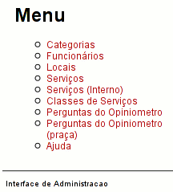O campo “Menu” é sempre exibido do lado esquerdo da tela. Através dele, pode-se visualizar os seguintes itens:
Detalharemos a seguir cada item:
CATEGORIAS
Figura inicial
Esta é a figura inicial que surge do lado direito da tela quando o item “Categoria” do "Menu" é pressionado.
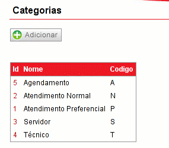Este item exibe uma tabela com as categorias existentes no sistema e torna possível a criação de novas categorias através do botão “Adicionar”.
Como criar uma nova categoria?
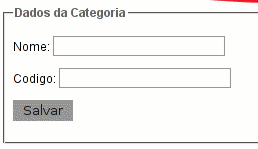
Ao se clicar o botão Adicionar, surgirá no lado direito da tela o campo “Dados da Categoria”. Para criar uma nova categoria, basta preenchê-lo corretamente e clicar no botão “Salvar”, o sistema atribui automaticamente um ID à nova categoria.
Como exibir os dados das categorias?
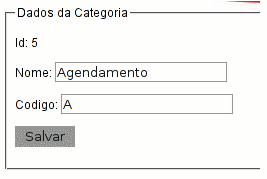Na figura inicial é mostrada uma tabela de categorias onde são exibidas as principais características de cada uma, como: ID, Nome e Código.
Ao se clicar no ID da categoria correspondente, é possível visualizá-lo e modificá-lo. Caso algma modificação seja realizada, é preciso pressionar o botão “Salvar” para se registrar as mudanças. Somente o campo ID não é passível de modificação.
Topo
FUNCIONÁRIOS
Figura inicial
Esta é a figura inicial que surge do lado direito da tela quando o item “Funcionario” do "Menu" é pressionado.
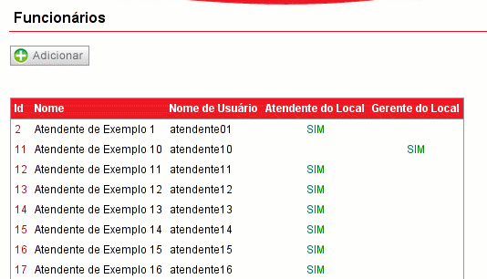Ao clicar neste item, o administrador poderá visualizar na tela todos os dados dos atendentes dentro de uma tabela. São exibidos o ID (número único de identificação dentro do banco de dados do sistema), o Nome ( nome do atendente), o Nome de Usuário (identificação do atendente no momento do login), Atendente no Local(mostra se o funcionário é atendente no momento) e Gerente do Local (mostra se o funcionário é o gerente do local).
Como criar um novo funcionário?
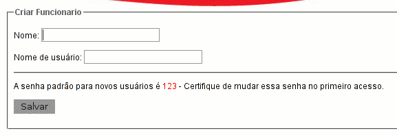Na tela inicial, acima da tabela, é possível visualizar o botão “Adicionar”. Este botão permite ao administrador criar, incluir novos atendentes.
Ao clicar esse botão, surge na tela o campo “Criar Funcionário”. Esta ação é muito fácil de ser executada, bastando para isso, preencher os campos com as informações Nome, nome do funcionário, Nome de Ususário que é o nome utilizado para o login no sistema e clicar no botão Salvar. Exemplo, adicionar o atendente João da Silva:
Nome: João da Silva
Nome de usuário: joao
obs.: Nesse momento o funcionário ainda não é Atendente do local!
Como editar as características do funcionário?
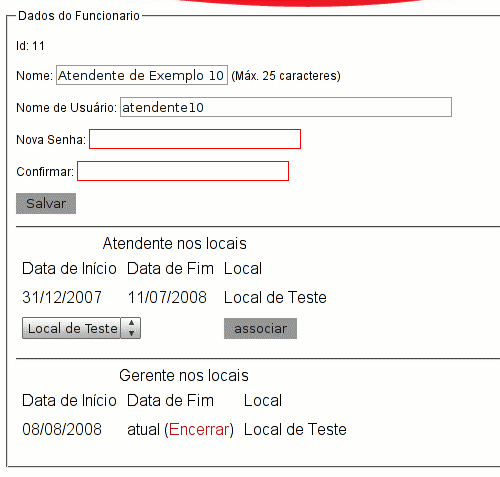Na tabela mostrada na tela inicial, o ID do funcionário é um link para exibir suas características atuais. Ao clicar, surge o campo Dados do Funcionário onde são mostrados seus dados: ID, Nome, Nome de
Usuário, Nova Senha, Confirmar. Somente o ID não pode ser modificado.
Como tornar o Funcionário um Atendente ou Gerente do local?
Para que o funcionário passe a ser atendente, é preciso escolher o local em que ele será atendente e depois clicar no botão associar. O mesmo deve ser feito caso o administrador queira tornar o atendente Gerente do Local.
Para que as possíveis modificações sejam registradas, é preciso clicar no botão Salvar.
Topo
LOCAIS
Figura inicial
Esta é a figura inicial que surge do lado direito da tela quando o item “Locais” do "Menu" é pressionado.
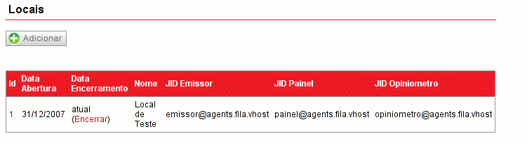Este item mostra um botão Adicionar e logo abaixo, uma tabela que exibe as principais características dos Locais existentes no sistema, como: ID; Data de Abertura; Data Encerramento (onde se pode encerrar o local no sistema através do clique na palavra “Encerrar”); Nome; JID Emissor (o endereço do emissor no sistema que torna possível a troca de informações); JID Painel(endereço no sistema para onde serão enviadas as informações que serão exibidas no painel do local) e JID Opiniometro (endereço no sistema para onde são enviadas as informações ao opiniometro da praça).
Visualização dos dados do Local
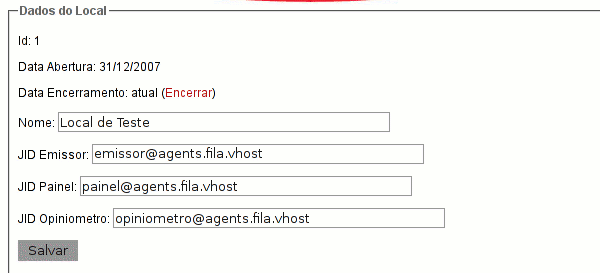Com um clique no ID do local, pode-se visualizar o campo Dados do Local, com as configurações do local (ID, Data Abertura - constantes; Data Encerramento, pode encerrar o local clicando em Encerrar; Nome; JID Emissor; JID Painel). Não é recomendável, apesar de ser possível, modificar os dados dos endereços dos JID's. Para salvar alguma alteração que tenha sido realizada, deve-se clicar no botão Salvar. Logo abaixo, são exibidas cinco tabelas: Guichês, Categorias, Limites, Ordem das perguntas do opiniometro e Ordem das perguntas do opiniometro (praça).
As funções de cada tabela, serão explicadas individualmente.
1. Guichês
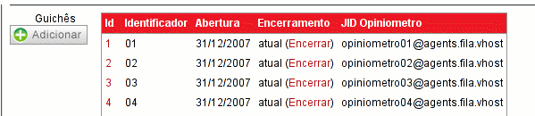Nessa tabela são exibidas as características de cada mesa associada ao local, como: ID (identificação da mesa no sistema e link para edição dos “Dados da Mesa”); Identificador (o “nome” da mesa que aparece nas telas do gerente e do atendente); Abertura (data de atribuição da mesa ao local); Encerramento (onde se pode tornar a mesa indisponível no local clicando na palavra “Encerrar”) e JID Opiniômetro (endereço usado para a comunicação do opiniômetro ligado à mesa com o sistema).
1.1. Como criar novas Mesas para o Local?
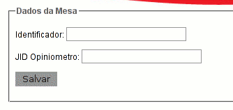Ao se clicar no botão Adicionar, logo abaixo da palavra Guichês mostrada na figura acima, é mostrado o campo Dados da Mesa. Para se criar uma nova mesa, basta preencher corretamente os campos Identificador e JID Opiniômetro.
Após certificar-se que o preenchiento está correto, clique no botão Salvar.
1.2. Como editar os dados da Mesa?
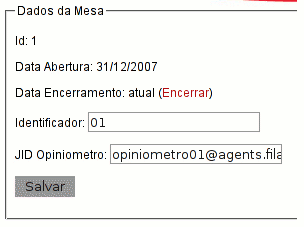Como foi dito anteriormente, o ID da Mesa é um link para mostrar as características da Mesa correspondente. É possível encerrar a mesa clicando na palavra Encerrar, modificar o Identificador da mesa e/ou modificar o JID Opiniometro.
No entanto, para que as modificações sejam registradas com sucesso, é preciso clicar no botão Salvar.
2. Categorias
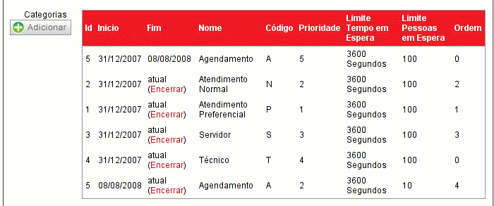Nesta tabela, são exibidas as categorias de atendimento existentes no sistema bem como suas principais características, como :ID (identificação de cada categoria no sistema); Início (data que começou a fazer parte do local); Fim (onde se pode tornar a categoria indisponível no sistema, clicando em “Encerrar”); Nome; Código (letra que representa a categoria); Prioridade (número que é multiplicado pelo tempo real de espera de cada senha dessa categoria, ou seja, quanto maior esse número menos tempo a senha vai ficar na fila esperando já que para o sistema ela vai estar a mais tempo que as outras); Limite Tempo em Espera (tempo máximo de espera para senhas dessa categoria, ou seja, tempo que é estipulado como ideal para a pessoa com a senha aguarde na fila); Limite de Pessoas em Espera (número máximo de senhas esperando pelo atendimento) e Ordem (ordem, de cima para baixo, em que as categorias são mostradas no emissor).
No entanto, para que a categoria esteja disponível no local, é preciso adicioná-la através do botão Adicionar. Acompanhe os detalhes no tópico abaixo.
2.1. Adicionando Categorias ao local
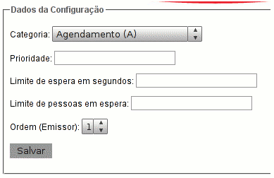Após o clique no botão Adicionar, aparecerá o campo Dados da Configuração então escolha a categoria na barra de seleção, digite a prioridade, o limite de espera em segundos, o limite de pessoas em espera e a ordem em que vai estar listada no emissor (caso a categoria não seja mostrada no emissor, deve-se atribuir a ela a ordem '0'). Após certificar-se de que os dados estão corretos, clique no botão Salvar.
Obs.: Caso você configure a mesma categoria mais de uma vez, será considerada a configuraçã mais recente.
3.Limites
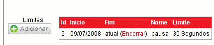Nesta tabela, são exibidas algumas características dos limites de tempo para cada possível estado da mesa, como: ID (identificação do estado da mesa no sistema); Início (data de criação do limite no sistema); Fim (onde se pode tornar o limite indisponível para o local, clicando em “Encerrar”); Nome(estado da mesa); Limite (tempo em segundos de tolerância para a mesa ficar nesse estado).
3.1. Como atribuir Limites ao local?
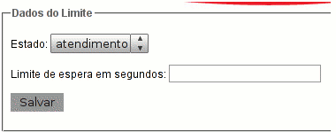Para atribuir um limite a um determinado estado, basta clicar no botão Adicionar. Aparecerá o campo Dados do Limite então escolha o estado na barra de seleção, digite o limite de espera em segundos e clique no botão Salvar.
Lembrando que apenas o limite configurado mais recentemente do mesmo estado será considerado.
4. Ordem das perguntas do opiniômetro
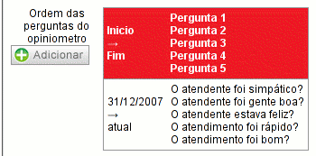Mostra a ordem das perguntas que serão exibidas nos opiniômetros ligados às mesas de cima para baixo, bem como a sua data de início e fim no local. Para modificar as perguntas ou a ordem delas, deve-se clicar no botão Adicionar. Acompanhe passo-a-passo no tópico abaixo.
4.1. Modificando a ordem das perguntas do opiniômetro
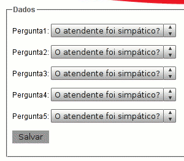Aparecerá o campo Dados, onde se pode selecionar a 1ª, 2ª, 3ª, 4ª e 5ª pergunta. Em seguida, clique em Salvar.
Importante: Cuidado para não colocar perguntas repetidas!
5. Ordem das perguntas do opiniômetro(praça)
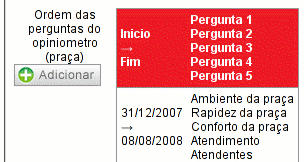Mostra a ordem das perguntas que serão exibidas no opiniômetro da praça de cima para baixo, bem como a sua data de início e fim no local. Para modificar a ordem ou as perguntas, deve-se clicar no botão Adicionar. Acompanhe passo-a-passo no tópico abaixo.
5.1. Modificando a ordem das perguntas do opiniômetro(praça)
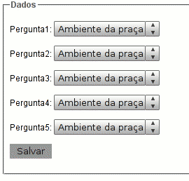Aparecerá o campo Dados, onde se pode selecionar a 1ª, 2ª, 3ª, 4ª e 5ª pergunta. Em seguida, clique em Salvar.
Importante: Cuidado para não colocar perguntas repetidas!
Topo
SERVIÇOS
Tela inicial
Esta é a figura inicial que surge do lado direito da tela quando o item “Serviços” do "Menu" é pressionado.
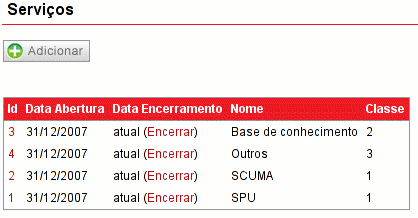Este item exibe o botão Adicionar e uma tabela listando todos os serviços existentes durante o expediente, bem como suas principais características.
Na tabela, pode-se visualizar características do serviço, tais como: ID (que é um número de identificação do serviço no sistema e funciona como um link para a visualização e possíveis modificações do serviço); data de abertura; data encerramento (onde se pode encerrar o serviço, ou seja, torná-lo indisponível no sistema, através do clique na palavra “Encerrar”); Nome do Serviço e a Classe correspondente.
Criando novos serviços
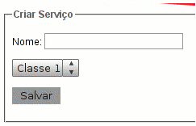O botão Adicionar ao ser pressionado, permite a criação de um novo serviço no sistema de maneira muito simples. Basta escrever o nome do serviço no campo Nome, escolher a Classe correspondente ao serviço na barra de seleção abaixo e pressionar o botão Salvar.
O sistema atribui automaticamente um ID ao novo serviço.
Modificando serviços já existentes
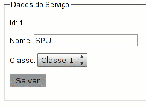Como já foi dito anteriormente, o ID do serviço é um link que ao ser clicado, abre o campo Dados do Serviço.
É possível visualizar os dados do serviço e modificar seu Nome e/ou sua Classe. No entanto, para se registrar as modificações é preciso clicar no botão Salvar.
Topo
SERVIÇOS (INTERNO)
Tela inicial
Esta é a figura inicial que surge do lado direito da tela quando o item “Serviços (interno)” do "Menu" é pressionado.
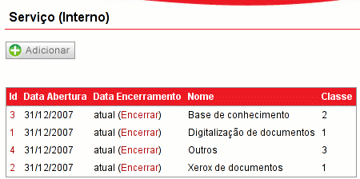Este item exibe o botão Adicionar e uma tabela listando todos os serviços internos existentes, bem como suas principais características.
Na tabela, pode-se visualizar características do serviço, tais como: ID (que é um número de identificação do serviço interno no sistema e funciona como um link para a visualização e possíveis modificações); data de abertura; data encerramento (onde se pode encerrar o serviço no sistema, ou seja, torná-lo indisponível no sistema, através do clique na palavra “Encerrar”); Nome do Serviço e a Classe correspondente.
Criando novos serviços internos
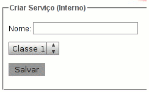O botão Adicionar ao ser pressionado, permite a criação de um novo serviço interno no sistema de maneira muito simples. Basta escrever o nome do serviço no campo Nome, escolher a Classe correspondente ao serviço na barra de seleção abaixo e pressionar o botão Salvar.
O sistema atribui um ID ao novo serviço interno automaticamente.
Modificando serviços internos já existentes
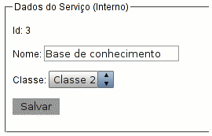Como já foi dito anteriormente, o ID do serviço é um link que ao ser clicado, abre o campo Dados do Serviço.
É possível visualizar os dados do serviço interno e modificar seu Nome e/ou sua Classe. No entanto, para se registrar as modificações é preciso clicar no botão Salvar.
Topo
CLASSES DE SERVIÇOS
Tela inicial
Esta é a figura inicial que surge do lado direito da tela quando o item “Classes” do "Menu" é pressionado.
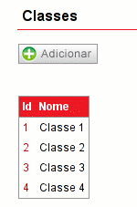Ao clicar neste item, é exibido uma tabela com as classes existentes no sistema, bem como seu ID e nome.
Visualizando os dados da Classe
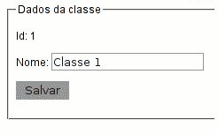Ao se clicar no ID correspondente de cada classe, surge o campo Dados da classe, onde os dados da classe podem ser modificados, ou simplesmente conferidos.
Caso alguma alteração seja feita, para torná-la permanente, é necessário pressionar o botão Salvar.
Criando novas Classes
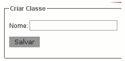Para adicionar uma nova classe, basta clicar no botão Adicionar (que é exibido acima da tabela de todas as classes existentes). Surgirá o campo “Adicionar Classe”, então é só preencher corretamente os dados ID e “Nome” e, em seguida, clicar em “Salvar”.
Topo
PERGUNTAS DO OPINIÔMETRO
Tela inicial
Esta é a figura inicial que surge do lado direito da tela quando o item “Perguntas do Opiniometro” do "Menu" é pressionado.
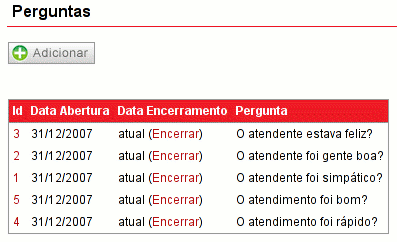Este item exibe um botão Adicionar e uma tabela com as configurações de cada pergunta, como: ID (identificação da pergunta no sistema que também funciona como link para edição e possíveis modificações na pergunta correspondente); Data de Abertura (data da criação da pergunta no sistema); Data de encerramento(mostra a data de encerramento ou “Encerrar”, que deve ser pressionado para tornar a pergunta indisponível no sistema) e Pergunta(exibe a pergunta propriamente dita que é exibida em cada opiniômetro).
Criando as Perguntas
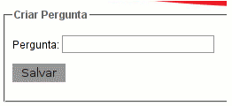O botão adicionar ao ser pressionado, cria um campo chamado Criar Pergunta e permite a implementação de uma nova pergunta no sistema. Para isso, basta escrever a pergunta e clicar no botão Salvar. O sistema cria um ID para a pergunta automaticamente.
Ao criar novas perguntas, tome o cuidado de não estar copiando uma pergunta que já existe ou estar fazendo a mesma pergunta com outras palavras!
Visualizando as Perguntas
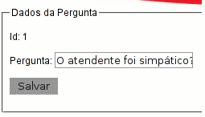Como já foi dito, o ID da pergunta serve como link para a sua visualização. Após o pressionamento é mostrado o campo Dados da Pergunta, seu ID e a pergunta, que pode ser modificada.
Para se registrar as modificações é preciso pressionar o botão Salvar.
Topo
PERGUNTAS DO OPINIÔMETRO (PRAÇA)
Tela inicial
Esta é a figura inicial que surge do lado direito da tela quando o item “Perguntas do Opiniometro (praça)” do "Menu" é pressionado.
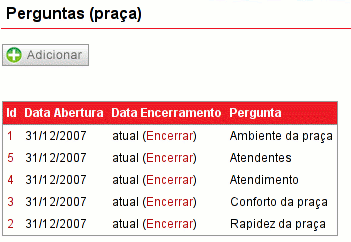Este item exibe um botão Adicionar e uma tabela com as configurações de cada pergunta, como: ID(identificação da pergunta da praça no sistema que também funciona como link para edição e possíveis modificações na pergunta correspondente); Data de Abertura (data da criação da pergunta da praça no sistema); Data de encerramento(mostra a data de encerramento ou “Encerrar”, que deve ser pressionado para tornar a pergunta da praça indisponível no sistema) e Pergunta (exibe a pergunta que é exibida no opiniômetro da praça).
Criando as Perguntas
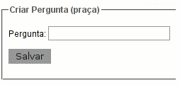O botão adicionar ao ser pressionado, cria um campo chamado Criar Pergunta e permite a implementação de uma nova pergunta no sistema. Para isso, basta escrever a pergunta e clicar no botão Salvar. O sistema cria um ID para a pergunta automaticamente.
Ao criar novas perguntas, tome o cuidado de não estar copiando uma pergunta que já existe ou estar fazendo a mesma pergunta com outras palavras!
Visualizando as Perguntas

Como já foi dito, o ID da pergunta serve como link para a sua visualização. Após o pressionamento é mostrado o campo Dados da Pergunta, seu ID e a pergunta, que pode ser modificada.
Para se registrar as modificações é preciso pressionar o botão Salvar.